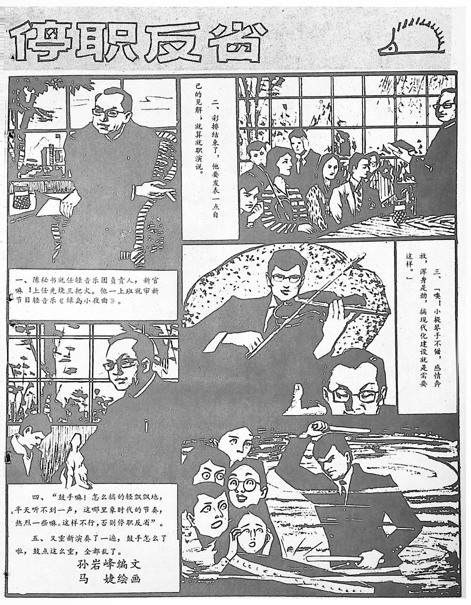

马婕绘画；孙岩峰编文 《人事》1986年第4期（总第7期），封三
停职反省
Suspended to Reflect on His Errors
- Panel text
- 陈秘书就任轻音乐团负责人，新官嘛！上任先烧三把火。他一上班就审新节目轻音乐《绿岛小夜曲》。
Secretary Chen took up his post as head of the light-music troupe — and a new official, of course, lights three fires on taking office. On his first day he reviewed a new number, the light-music piece “Green Island Serenade.” - 彩排结束了，他要发表一点自己的见解，就算就职演说。
When the dress rehearsal ended he wanted to offer a few views of his own, by way of an inaugural speech. - 「噢！小提琴手不错，感情奔放，浑身是劲，搞现代化建设就是需要这样。」
“Oh! The violinist is good — passionate, full of energy. That's exactly what building modernization needs.” - “鼓手嘛！怎么搞的轻飘飘地，半天听不到一声，这哪里象时代的节奏，热烈一些嘛。这样不行，否则停职反省”。
“As for the drummer — what's this, so light and airy? I could hardly hear a beat. How is that the rhythm of the age? Put some fire into it. This won't do — or it's suspension and self-examination for you.” - 又重新演奏了一遍，鼓手怎么了啦，鼓点这么重，全都乱了。
They played it through again. What's got into the drummer? The beat is so heavy that everything falls apart.
- 陈秘书就任轻音乐团负责人，新官嘛！上任先烧三把火。他一上班就审新节目轻音乐《绿岛小夜曲》。
- Description
- Five-panel picture story: the newly appointed head of a light-music troupe, out to make his mark, praises the violinist and threatens the drummer with suspension for playing too softly — and on the next run-through the heavy drumming throws everything into chaos.
- Note
- 新官上任三把火, 'a new official lights three fires', describes showy zeal on taking office. 停职反省 is the disciplinary sanction of suspension pending self-criticism.
- Artists
- Ma Jie 马婕 (drawn); Sun Yanfeng 孙岩峰 (text)
- Published in
- 《人事》1986年第4期（总第7期）, inside back cover
- Themes
- Bureaucratism · Picture stories (连环画)

Cite
Ma Jie and Sun Yanfeng, “停职反省” [Suspended to Reflect on His Errors], Renshi (Personnel) 《人事》, 1986, no. 4, inside back cover.